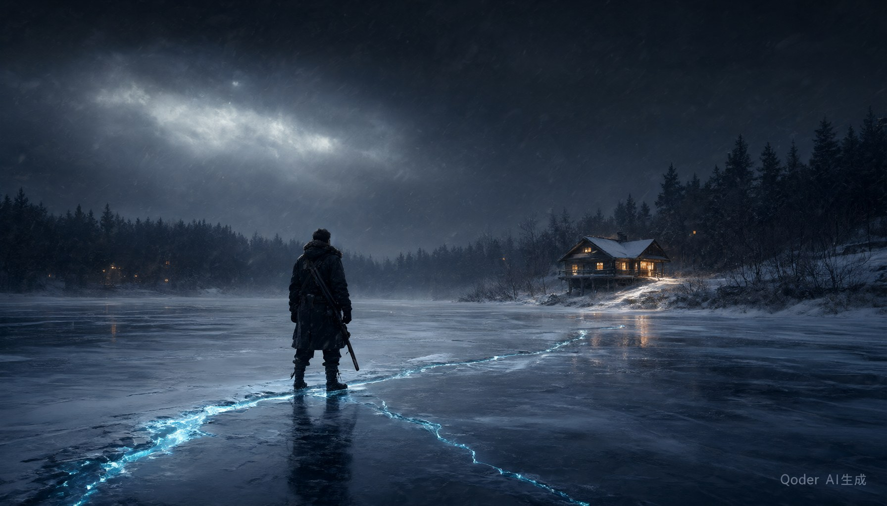

冰融倒计时
七天不是剧情装饰，而是核心机制。第 1-3 天冰面完整，关键物证可采集；第 4-6 天冰层开裂，部分证据不可逆丢失；第 7 天冰面全化，你只能基于保留的证据做最终推演。每一次选择都意味着放弃。

01案件
一具冰封十二年的遗体，一份被草草归档的卷宗，和七个不会再来的晴天。
1997 年 12 月，护林员在北境湖的冰面上发现一串通向湖心的脚印。脚印在冰窟边缘戛然而止。搜索持续了十一天，没有尸体，没有嫌疑人，只有一份被草草归档的卷宗。
十二年后，同一片湖面在异常升温中开裂。冰层下浮出的，是当年失踪者方远的遗体——以及一件本不该出现在现场的东西：沈砺的旧警徽。
你被临时召回。作为方远的搭档、唯一读过完整卷宗、又因旧案被调离一线的人，你只有七天。你要在湖水彻底解冻之前，重新拼起这条被冻结了十二年的证据链——并找出谁杀了你的搭档。
「他们以为时间会结冰，
— 1997 年卷宗扉页，手写批注
把一切都封在里面。」
02玩法
没有枪战，没有追逐。你手里的工具只有现场、证词，和一块不断被推倒重来的推理板。
七天不是剧情装饰，而是核心机制。第 1-3 天冰面完整，关键物证可采集；第 4-6 天冰层开裂，部分证据不可逆丢失；第 7 天冰面全化，你只能基于保留的证据做最终推演。每一次选择都意味着放弃。
不是选 A/B/C，而是你自己用物证、证词与时间线拼出结论。把证据卡拖到推理板上，连线形成闭环。矛盾会让链条断裂，只有站得住的推断才能推进案件。参考《奥伯拉·丁的回归》与《黄金偶像案件》。
法医林晚想揭露真相，护林员周叙想掩盖过去。每一次追问都在消耗对方的耐心，也消耗你手里的筹码。施压、共情，还是沉默？你选择信任谁，决定了哪些证据会出现在推理板上。
3-5 个结局，由「保留了哪些证据」与「指控了谁」共同决定。没有标准答案，只有你能接受的真相。多周目才有意义，Steam 社区讨论和直播价值。
03人物
十二年的时间足够让人忘掉很多事，也足够让人重新编好一套说辞。
前刑侦顾问 / 方远的搭档 / 案件重启后临时召回
「我不相信记忆，只相信留在冰上的痕迹。」
十二年前，他的搭档方远在北境湖失踪。他被迫签下那份结案报告，从此被调离一线。如今案卷重启，冰层下浮出方远的遗体——以及沈砺自己的旧警徽。他要在同一片冰面上，找出谁杀了他的搭档，并证明自己当年没有错。
法医 · 湖区司法鉴定中心
「尸体不会说谎，但解读它的人会。」
护林员 · 北境湖区
「那天晚上，湖面上只有一个人的脚印。」
前刑警 · 沈砺的搭档 · 已故
「如果冰化了，真相就浮出来了。」
04证据板
点击卡片，查看证据。每一张都可能改变你的推论。
从冰层下提取，含有异常化学成分。证明冰面在 1997 年 12 月曾被人为破坏。
最后一页写着：「他来了。我知道他要做什么。」笔迹颤抖，但墨水是新的。
沈砺的警徽，出现在方远遗体旁。十二年前它应该已经在档案室里。
「那天晚上只有一个人的脚印。」但冰芯样本显示，至少有两个人到过湖面。
05影像
选择一张影像，查看完整画面。